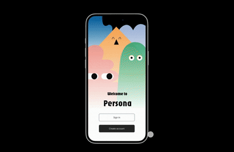
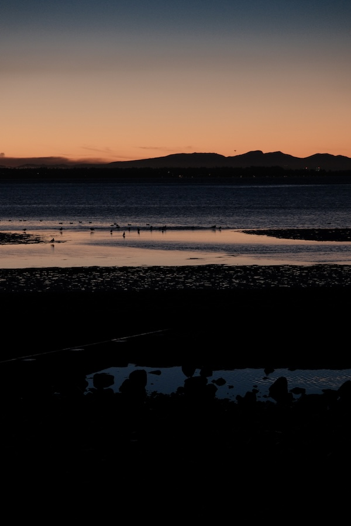
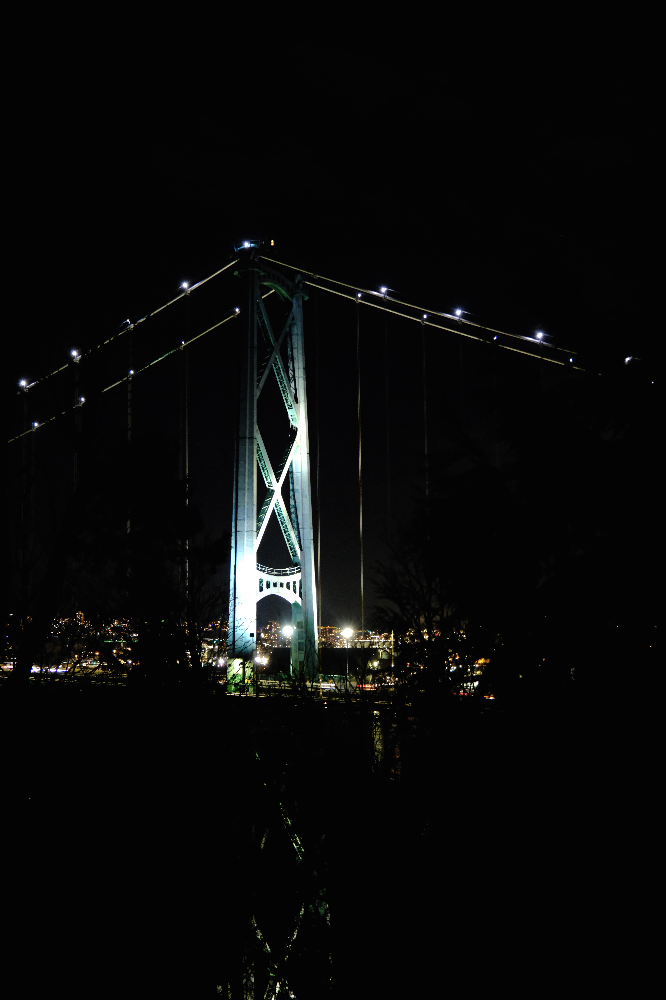
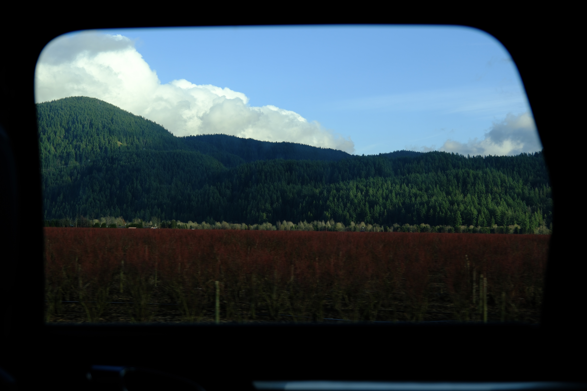
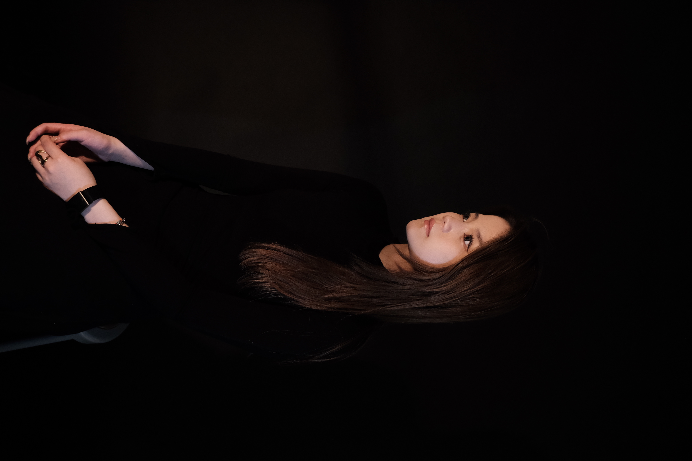

Interactive Books
Website
Installation
This thesis explores the experience of Highly Sensitive People (HSPs) through interactive systems that convert sensitive perception into tangible forms. The projects, which are based on Dr. Elaine Aron's D.O.E.S. concept—Depth of Processing, Overstimulation, Emotional Intensity, and Sensing the Subtle—and inspired by her book The Highly Sensitive People, which reinterprets sensitivity as a strength of awareness, empathy, and introspection rather than a weakness.


Image Archive
The book is a collection of 256 images organized into separate sections, each of that explores a different visual language. The project is bound together by the theme of the unexpected and embraces difference rather than consistency. Each part is designed with a unique system and aesthetic. The book pushes sections apart, defying traditional ideas of unity, proposing that there can be meaning made through disjunction, surprise and the space between unrelated elements.

Logo
Brand System
Add your project description here.
UI Design
Persona explores the role of artificial intelligence in emotional well-being and self-expression. The app is inspired by the human need to be heard and understood and it offers a safe, approachable environment to share thoughts, record emotions, and have ongoing conversations. Persona is a digital companion that transforms everyday reflections into opportunities for emotional processing, connection, and care through human-like interactions and a warm, character-driven visual identity.
Prototype ↗
UI Design
Inspired by the misregistration, halftone textures and accidental imperfections of Risograph printing, this tool reinterprets the visual language of the medium in a digital environment. It converts full color images to the monochrome print layers, with control over color separations and image processing parameters. Rather than fixing imperfections, the interface accepts the glitches and chaos that are part of Risograph production, transforming technical preparation into a process of design experimentation.
Website Access ↗
Film stills
This series reworks a selection of Wong Kar Wai's films from the 1990s and early 2000s, questioning how they would exist under today's censorship in mainland Chinese cinema. As a visual language, the use of ASCII art—suggesting absence, distortion, and loss. Scenes and moments that would probably be cut or changed are no longer fully visible, but are suggested by the incomplete structures. Instead of conserving the original works, the project deliberately disrupts them, looking at how censorship changes not just the narrative content. The work reflects on the difficulty of maintaining the same cinematic experience when the essential elements are no longer permitted to stay.

Analog
This tabloid French-fold book focuses on marginalized animals, cultures, generations and people. All text and images are pushed to the margins and edges with the center mostly empty. By reversing the traditional layout, where margins are kept blank, the project focuses attention on what is usually ignored. This spatial displacement is a marker of the ways certain voices are pushed to the margins, but it is also a suggestion that these edges are worth reading more closely, and paying more attention to.


Typography
The book explores the juxtaposition between nature and the built environment in different areas of New York City. The story starts in concrete-dominated landscapes where nature is subtly emerge, and moves towards spaces where nature has taken over completely. This development explores the conflict and coexistence of these two opposites in the project. A series of half-insert pages introduce text within the sequence, allowing viewers to see both conditions at once, reinforcing the idea that nature and concrete are not separate, but are in constant overlap and redefinition.


offset print, 160pp
Mahjong is a game and cultural ritual commonly associated with gatherings and reunions in Chinese communities. This guidebook introduces mahjong. It explains what mahjong is, its cultural meanings and how to play. The game itself is also the main visual language used throughout. The book is divided into three sections, distinguished by red, blue and green, colours taken from the most iconic and limited palette of mahjong tiles. The three suits, dots, bamboo, and characters, represent the page numbers, thus further integrating the game system into the reading experience. The overall size is scaled proportionally from the real size of a mahjong tile, so the physical object of the book may reflect the physical experience of the game itself.


UI Design
Memories of Fridge Magnet is an interactive archive inspired by the refrigerators filled with collected souvenirs from around the world. The website simulates a tactile environment where users can move magnets and notes around, mimicking the experience of interacting with a real refrigerator door. Each magnet has a personal travel memory attached, and each one also shows how small, everyday things can be filled with storytelling, nostalgia and the preservation of lived experiences.
Website Access ↗









